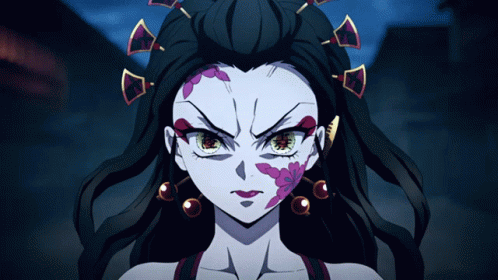
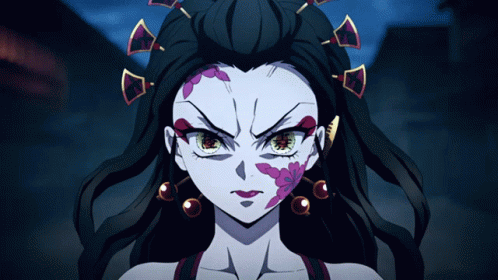

Kokushibo
História
Distrito da Luz Vermelha, local em que nasceu, era conhecido por fazer mulheres bonitas ficarem ricas. Naquele lugar, quem tivesse beleza poderia ter tudo o que sempre quis. Nascendo em uma região pobre e tendo um irmão mais velho, Ume era uma garota bonita que despertava inveja em qualquer mulher, além de atrair homens mais velhos. Em algum momento, a mãe dos dois, que trabalhava em uma casa de chá — mas na realidade era um bordel —, acabou falecendo após ser acometida uma doença chamada Ume. Por causa de sua beleza, ela foi contratada para trabalhar em uma casa de chá, a mais famosa da cidade. Mudando de vida, Ume passou a ganhar roupas, comidas e uma boa educação, enquanto seu irmão mais velho trabalhava cuidando das dívidas. Quando tinha 13 anos, Ume acabou cegando um samurai e, como punição, foi queimada. O seu irmão, que estava fora por causa de um trabalho, não acreditou no que estava vendo. Enfurecido pelo ocorrido, ele matou o samurai responsável e também uma mulher, que aparentemente havia apresentado a garota ao homem. Vagando sozinho com o corpo de sua irmã, Gyutato tentava procurar por alguém que o ajudasse. Felizmente, acaba encontrando com Douma, Lua Superior 6 — atualmente ocupando o segundo lugar no ranking. Em troca do seu sangue, a qual permitiu que Ume ficasse viva, o garoto foi transformado em demônio, junto de sua irmã. Assim, passaram a ser os onis de Douma, que frequentemente lutavam em buscar de ficar mais fortes, tanto que se tornam a Lua Superior 6 ao longo de 50 ou 70 anos — tempo aproximado.
Daki
Daki usava as faixas do seu kimono para poder atacar os seus inimigos, as quais eram utilizadas
também para conjurar a sua técnica demoníaca. Além disso, ela é capaz de absorver pessoas pelas
faixas e enviá-las para um quarto que geralmente é vigiado por um tecido que ganha vida e a
capacidade de pensar. Já durante a luta contra Tanjiro, Daki mostrou possuir uma velocidade absurda
em perceber os ataques de seus inimigos, além de conseguir esquivar quase que de forma instantânea
dos golpes do espadachim. Diferentemente de outros onis, Daki não é morta pelo método convencional,
o que torna um oponente difícil de enfrentar.
Para isso, deve ser derrotada simultaneamente com o seu irmão, ou então ser atingida pela luz do
sol. Como uma Lua Superior, Daki também possui o poder de regeneração acelerada, sendo capaz de se
recuperar dos seus ferimentos em batalhas. Apesar de suas capacidades, Daki não chega a se comparar
com a força de Uzui, o Pilar do Som. Ela foi facilmente derrotada pelo rapaz, sendo incapaz de
perceber a sua presença. Ao que tudo indica, o único motivo de ela possuir o título de Lua Superior
6 é por causa do seu irmão mais velho, o qual possui atributos superiores aos de Daki. Falando um
pouco sobre as as suas habilidades, a jovem conseguia ter uma manipulação parcial de seu corpo,
sendo capaz de transformar o próprio pescoço em faixa, que o deixava mais flexível e trabalhoso para
os mocinhos golpearem.
as uma, que é baseada em seus seus tecidos. Sendo uma Arte Demoníaca de Sangue, as oito faixas de
Daki vão até o seu alvo com extrema velocidade, sendo bastante afiadas e também flexíveis.
 

Gyuutarou
Gyutaro nasceu na pobreza, na classe mais baixa do distrito de entretenimento. Sua mãe
frequentemente o batia e tentava matá-lo antes mesmo de ele nascer devido a uma suposta tentativa de
aborto, já que ela não tinha dinheiro para alimentá-lo, mas seus esforços foram em vão quando ela
morreu de sífilis.
Ao longo de sua infância, ele foi repreendido por sua aparência, voz e falta de higiene por parte
dos outros moradores do bairro. Quando sua irmã, Ume, nasceu, ele ganhou um sentimento de orgulho e
agiu como seu “colecionador” no distrito.
Quando ele completou 13 anos, ele voltou para casa do trabalho para descobrir sua irmã amarrada e
queimada até quase a morte e deixada para morrer em uma vala porque ela espetou o olho de um samurai
com um grampo de cabelo. Ele pulou na vala e começou a entrar em pânico, exigindo em prantos que sua
irmã voltasse ao normal enquanto embalava seu corpo. Enquanto ele abraça sua irmã moribunda, o mesmo
samurai cujo olho foi espetado, se esgueira por trás de Gyutaro e dá um golpe em suas costas na
tentativa de matá-lo. Ele então ouviu o samurai falando com o gerente do bordel, que revelou ser
aquele que pediu a morte de Gyutaro. No entanto, antes que o samurai seja capaz de acabar com ele,
ele consegue pular da vala e matar o gerente e o Samurai com sua foice.
Apesar de estar ferido, Gyutaro carregou o corpo de sua irmã Ume por todo o distrito de Hanamachi em
busca de ajuda, mas acabou sendo negado, não importa onde ele fosse. Ele finalmente sucumbiu à
exaustão, tanto ele quanto Ume estando à beira da morte. Antes do fim, eles foram encontrados pelo
então Ranque Superior 6 Doma, que estava procurando nos distritos de entretenimento para devorar as
jovens da área. Ele então se ofereceu para “ajudá-los”, transformando-os em demônios, devido a ele
ser um “cara legal” e deu-lhes algumas gotas de seu sangue para iniciar suas transformações. Ele
então alegremente os desafiou a se tornarem poderosos o suficiente para serem escolhidos por “aquele
homem” e se juntarem aos próprios Doze Kizuki.
Habilidades
Manipulação de Sangue: A Arte Demoníaca de Sangue de Gyutaro permite que ele manipule o sangue de seu próprio corpo de várias maneiras.
Ele gera de sua carne ou de feridas abertas em seu corpo. Está implícito que Gyutaro não fica sem sangue devido às suas habilidades regenerativas, dando-lhe uma fonte virtualmente infinita de sangue para alimentar suas técnicas. Em combate, ele geralmente cria barragens de sangue solidificado em forma de foice tão afiada quanto lâminas que podem viajar em velocidades imensamente rápidas para atacar seus oponentes.
Gyutaro é capaz de manipular livremente esses cortes de sangue à vontade, alterando seus movimentos até atingir seu oponente ou moldando-os como quiser.